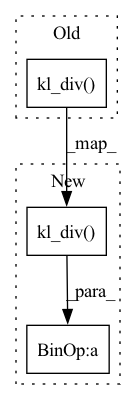

Pattern ID :18014
Before Change
index=index.view(student_scores.size(0), -1),
src=teacher_scores)
student_scores = nn.functional.log_softmax(student_scores / self.args.student_temp, dim=1)
loss = nn.functional.kl_div( student_scores, teacher_mat, reduction="batchmean")
return loss
def training_step(self, *args):After Change
index=index.view(student_scores.size(0), -1),
src=teacher_scores)
student_scores = nn.functional.log_softmax(student_scores / self.args.student_temp, dim=1)
loss = nn.functional.kl_div( student_scores, teacher_mat, reduction="batchmean") * self._dist_loss_scale_factor
return loss
In pattern: SUPERPATTERN
Frequency: 3
Non-data size: 3
Instances Fragment ID: 59117602
Project Name: texttron/tevatron
Commit Name: 82e03a3fd588308ea76d39dc2a162f82d9e294cd
Time: 2023-02-27
Author: x93ma@edu.uwaterloo.ca
File Name: src/tevatron/distillation/trainer.py
M Class Name: DistilTrainer
N Class Name: DistilTrainer
M Method Name: compute_loss(3)
N Method Name: compute_loss(3)
M Parent Class: Trainer
N Parent Class: Trainer
M File Name: src/tevatron/distillation/trainer.py
N File Name: src/tevatron/distillation/trainer.py
M Start Line: 63
M End Line: 68
N Start Line: 66
N End Line: 71
Before Change
def _calc_distill_loss(self, student_val: Tensor, teacher_val: Tensor) -> Tensor:
return (
TF.kl_div(
input=TF.log_softmax(student_val / self._temperature, dim=-1),
target=TF.softmax(teacher_val / self._temperature, dim=-1),
reduction="batchmean",
)
* (self._temperature ** 2)
)
After Change
def _calc_distill_loss(self, student_val: Tensor, teacher_val: Tensor) -> Tensor:
return (
TF.kl_div(
input=TF.log_softmax(student_val / self._temperature, dim=-1),
target=TF.softmax(teacher_val / self._temperature, dim=-1),
reduction="sum",
)
/ (student_val.numel() / student_val.shape[-1]) // scale "sum" w/ batchsize
* (self._temperature ** 2)
)
Fragment ID: 59117603
Project Name: neuralmagic/sparseml
Commit Name: 4383650328e58220a0527186a31f0576e8b564e5
Time: 2022-04-07
Author: eldar.ciki@gmail.com
File Name: src/sparseml/pytorch/optim/modifier_distillation.py
M Class Name: DistillationModifier
N Class Name: DistillationModifier
M Method Name: _calc_distill_loss(3)
N Method Name: _calc_distill_loss(3)
M Parent Class: ScheduledUpdateModifier
N Parent Class: ScheduledUpdateModifier
M File Name: src/sparseml/pytorch/optim/modifier_distillation.py
N File Name: src/sparseml/pytorch/optim/modifier_distillation.py
M Start Line: 388
M End Line: 392
N Start Line: 388
N End Line: 393
Before Change
action_probs, policy_values = self.actor(states)
action_logprobs = action_probs.log()
aux_loss = 0.5 * F.mse_loss(policy_values.flatten(), rewards)
policy_loss = aux_loss + F.kl_div( action_logprobs, old_action_logprobs, log_target = True, reduction = "batchmean")
update_network_(policy_loss, self.opt_actor)
values = self.critic(states)After Change
// policy network loss copmoses of both the kl div loss as well as the auxiliary loss
aux_loss = 0.5 * F.mse_loss(policy_values.flatten(), rewards)
loss_kl = F.kl_div( action_logprobs, old_action_logprobs, log_target = True, reduction = "batchmean")
policy_loss = aux_loss + loss_kl
update_network_(policy_loss, self.opt_actor)
Fragment ID: 59117600
Project Name: lucidrains/phasic-policy-gradient
Commit Name: 2ef00955b78d96b5a02e9f07d04c352e4acda719
Time: 2020-09-28
Author: lucidrains@gmail.com
File Name: train.py
M Class Name: PPG
N Class Name: PPG
M Method Name: learn(2)
N Method Name: learn(2)
M Parent Class:
N Parent Class:
M File Name: train.py
N File Name: train.py
M Start Line: 123
M End Line: 160
N Start Line: 149
N End Line: 213